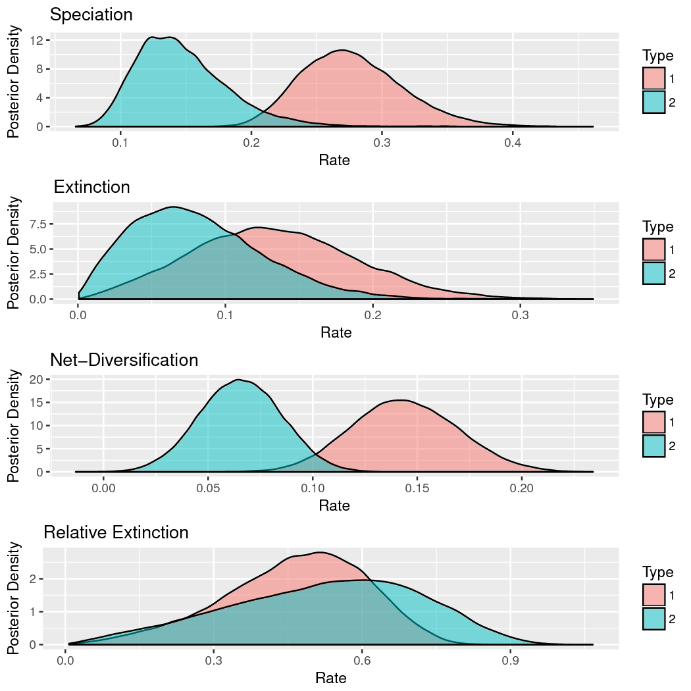

Phylogenetic Inference using ‘RevBayes‘
State-Dependent Diversification Rate Estimation
Sebastian Höhna, Will Freyman, and Emma Goldberg
Overview
Prerequisites
Data files and scripts
Scripts
Estimating Character State-Dependent Speciation & Extinction Rates {#estimating-character-state-dependent-speciation-extinction-rates .unnumbered}
Introduction {#introduction .unnumbered}
This tutorial describes how to specify character state-dependent branching process models in ‘RevBayes‘. Frequently referred to as state-dependent speciation and extinction (SSE) models, these models are a birth-death process where the diversification rates are dependent on the state of an evolving character. The original model of this type considered a binary character (a trait with two discrete state values; called BiSSE, @Maddison2007). Several variants have also been developed for other types of traits (missing reference).
We will outline the theory behind this method, and then you will fit it to data using Markov chain Monte Carlo (MCMC). ‘RevBayes‘ is a powerful tool for SSE analyses. After working through this tutorial you should be able to set up custom SSE models and use them to infer character-dependent diversification rates and ancestral states. We also provide examples of how to plot the results using the ‘Rev‘Gadgets R package.
Contents {#contents .unnumbered}
The State-Dependent Speciation and Extinction tutorial contains several sections:
-
Section [sec:diversification_rate_overview]: Introduction to diversification rate estimation
-
Section [sec:models]: Theory behind diversification rate models
-
Section [sec:BiSSE_Theory]: Theory behind SSE models
-
Section [sec:CDBDP]: Running a BiSSE/MuSSE analysis in ‘RevBayes‘
-
Section [sec:HiSSE_Theory]: Running a HiSSE analysis in ‘RevBayes‘
-
Section [sec:ClaSSE]: Running a ClaSSE analysis in ‘RevBayes‘
Requirements {#requirements .unnumbered}
We assume that you have read and hopefully completed the following tutorials:
Note that the ‘Rev‘ basics tutorial introduces the basic syntax of ‘Rev‘ but does not cover any phylogenetic models. We tried to keep this tutorial very basic and introduce all the language concepts and theory on the way. You may only need the ‘Rev‘ syntax tutorial for a more in-depth discussion of concepts in ‘Rev‘.
Data and files {#sec:data_files .unnumbered}
We provide the data files which we will use in this tutorial. You may want to use your own data instead. In the ‘data‘ folder, you will find the following files:
-
primates_tree.nex: Dated primate phylogeny including 233 out of 367 species. (This tree is from @MagnusonFord2012, who took it from @Vos2006 and then randomly resolved the polytomies using the method of @Kuhn2011.)
-
primates_morph.nex: A set of several discrete-valued characters. The characters are described in the file primates_morph_description.txt.
-
primates_biogeo.tre: A dated phylogeny of the 23 primate species.
-
primates_biogeo.tsv: Biogeographic range data for 23 primate species.
Open the tree files ‘primates_tree.nex‘ and ‘primates_biogeo.tre‘ in FigTree.
Open the character data files ‘primates_morph.nex‘ and ‘primates_biogeo.tsv‘ in a text editor.
Overview: Diversification Rate Estimation
Models of speciation and extinction are fundamental to any phylogenetic analysis of macroevolutionary processes (e.g.,divergence time estimation, diversification rate estimation, continuous and discrete trait evolution, and historical biogeography). First, a prior model describing the distribution of speciation events over time is critical to estimating phylogenies with branch lengths proportional to time. Second, stochastic branching models allow for inference of speciation and extinction rates. These inferences allow us to investigate key questions in evolutionary biology.
Diversification-rate parameters may be included as nuisance parameters
of other phylogenetic models—i.e.,where
these diversification-rate parameters are not of direct interest. For
example, many methods for estimating species divergence times—such as
BEAST(Drummond et al. 2012),
MrBayes(Ronquist et al. 2012), and
RevBayes(Höhna et al. 2016)—implement ‘relaxed-clock models’
that include a constant-rate birth-death branching process as a prior
model on the distribution of tree topologies and node ages. Although the
parameters of these ‘tree priors’ are not typically of direct interest,
they are nevertheless estimated as part of the joint posterior
probability distribution of the relaxed-clock model, and so can be
estimated simply by querying the corresponding marginal posterior
probability densities. In fact, this may provide more robust estimates
of the diversification-rate parameters, as they accommodate uncertainty
in the other phylogenetic-model parameters (including the tree topology,
divergence-time estimates, and the other relaxed-clock model
parameters). More recent work,
e.g.,@Heath2014, uses macroevolutionary
models (the fossilized birth-death process) to calibrate phylogenies and
thus to infer dated trees.
In these tutorials we focus on the different types of macroevolutionary models to study diversification processes and thus the diversification-rate parameters themselves. Nevertheless, these macroevolutionary models should be used for other evolutionary questions, when an appropriate prior distribution on the tree and divergence times is needed.
Types of Hypotheses for Estimating Diversification Rates
Many evolutionary phenomena entail differential rates of diversification (speciation – extinction); e.g.,adaptive radiation, diversity-dependent diversification, key innovations, and mass extinction. The specific study questions regarding lineage diversification may be classified within three fundamental categories of inference problems. Admittedly, this classification scheme is somewhat arbitrary, but it is nevertheless useful, as it allows users to navigate the ever-increasing number of available phylogenetic methods. Below, we describe each of the fundamental questions regarding diversification rates.
(1) Diversification-rate through time estimation
What is the (constant) rate of diversification in my study group? The most basic models estimate parameters of the stochastic-branching process (i.e.,rates of speciation and extinction, or composite parameters such as net-diversification and relative-extinction rates) under the assumption that rates have remained constant across lineages and through time; i.e.,under a constant-rate birth-death stochastic-branching process model (Nee et al. 1994). Extensions to the (basic) constant-rate models include diversification-rate variation through time (missing reference). First, we might ask whether there is evidence of an episodic, tree-wide increase in diversification rates (associated with a sudden increase in speciation rate and/or decrease in extinction rate), as might occur during an episode of adaptive radiation. A second question asks whether there is evidence of a continuous/gradual decrease in diversification rates through time (associated with decreasing speciation rates and/or increasing extinction rates), as might occur because of diversity-dependent diversification (i.e.,where competitive ecological interactions among the species of a growing tree decrease the opportunities for speciation and/or increase the probability of extinction, e.g.,@Hoehna2014a). Third, we can ask whether changes in diversification rates are correlated with environmental factors, such as environmental CO~2~ or temperature (Condamine et al. 2013). A final question in this category asks whether our study tree was impacted by a mass-extinction event (where a large fraction of the standing species diversity is suddenly lost, e.g.,@May2016). The common theme of these studies is that the diversification process is tree-wide, that is, all lineages of the study group have the exact same rates at a given time.
(2) Diversification-rate variation across branches estimation
Is there evidence that diversification rates have varied significantly across the branches of my study group? Models have been developed to detect departures from rate constancy across lineages; these tests are analogous to methods that test for departures from a molecular clock—i.e.,to assess whether substitution rates vary significantly across lineages (missing reference). These models are important for assessing whether a given tree violates the assumptions of rate homogeneity among lineages. Furthermore, these models are important to answer questions such as: What are the branch-specific diversification rates?; and Have there been significant diversification-rate shifts along branches in my study group, and if so, how many shifts, what magnitude of rate-shifts and along which branches?
(3) Character-dependent diversification-rate estimation
Are diversification rates correlated with some variable in my study group? Character-dependent diversification-rate models aim to identify overall correlations between diversification rates and organismal features (binary and multi-state discrete morphological traits, continuous morphological traits, geographic range, etc.). For example, one can hypothesize that a binary character, say if an organism is herbivorous/carnivorous or self-compatible/self-incompatible, impact the diversification rates. Then, if the organism is in state 0 (e.g.,is herbivorous) it has a lower (or higher) diversification rate than if the organism is in state 1 (e.g.,carnivorous) (Maddison et al. 2007).
Diversification Rate Models
We begin this section with a general introduction to the stochastic
birth-death branching process that underlies inference of
diversification rates in RevBayes. This primer will
provide some details on the relevant theory of stochastic-branching
process models. We appreciate that some readers may want to skip this
somewhat technical primer; however, we believe that a better
understanding of the relevant theory provides a foundation for
performing better inferences. We then discuss a variety of specific
birth-death models, but emphasize that these examples represent only a
tiny fraction of the possible diversification-rate models that can be
specified in RevBayes.
The birth-death branching process
Our approach is based on the reconstructed evolutionary process described by @Nee1994b; a birth-death process in which only sampled, extant lineages are observed. Let $N(t)$ denote the number of species at time $t$. Assume the process starts at time $t_1$ (the ‘crown’ age of the most recent common ancestor of the study group, $t_\text{MRCA}$) when there are two species. Thus, the process is initiated with two species, $N(t_1) = 2$. We condition the process on sampling at least one descendant from each of these initial two lineages; otherwise $t_1$ would not correspond to the $t_\text{MRCA}$ of our study group. Each lineage evolves independently of all other lineages, giving rise to exactly one new lineage with rate $b(t)$ and losing one existing lineage with rate $d(t)$ (Figure [fig:BirthDeathShift] and Figure [fig:BDP]). Note that although each lineage evolves independently, all lineages share both a common (tree-wide) speciation rate $b(t)$ and a common extinction rate $d(t)$ (missing reference) for arbitrary rate functions.
To compute the equation above we need to know the rate function, $r(t,s) = \int_t^s d(x)-b(x) dx$, and the probability of survival, $P(N(T)!>!0|N(t)!=!1)$. @Yule1925 and later @Kendall1948 derived the probability that a process survives ($N(T) > 0$) and the probability of obtaining exactly $n$ species at time $T$ ($N(T) = n$) when the process started at time $t$ with one species. Kendall’s results were summarized in Equation (3) and Equation (24) in @Nee1994b An overview for different diversification models is given in @Hoehna2015a.
Sidebar: Phylogenetic trees as observations
The branching processes used here describe probability distributions on phylogenetic trees. This probability distribution can be used to infer diversification rates given an “observed” phylogenetic tree. In reality we never observe a phylogenetic tree itself. Instead, phylogenetic trees themselves are estimated from actual observations, such as DNA sequences. These phylogenetic tree estimates, especially the divergence times, can have considerable uncertainty associated with them. Thus, the correct approach for estimating diversification rates is to include the uncertainty in the phylogeny by, for example, jointly estimating the phylogeny and diversification rates. For the simplicity of the following tutorials, we take a shortcut and assume that we know the phylogeny without error. For publication quality analysis you should always estimate the diversification rates jointly with the phylogeny and divergence times.
Theory behind state-dependent diversification models
The Binary State Speciation and Extinction model (BiSSE} (missing reference) can be thrown off if the transition rates are asymmetric. BiSSE and related models are now mostly used to assess if the states of a character are associated with different rates of speciation or extinction.
‘RevBayes‘ implements the extension of BiSSE to any number of discrete
states (i.e., the MuSSE model in diversitree;
@FitzJohn2012). We will first describe the general theory about the
model; you may skip over this section if you are not interested in the
math behind the model. Then we will show how to run an analysis in
‘RevBayes‘.

Estimated ancestral states for the activity period of primates.
General approach
The BiSSEmodel assumes two discrete states
(i.e.,a binary character), and that the
state of each extant species is known
(i.e.,the discrete-valued character is
observed). The general approach adopted by BiSSEand
related models is to derive a set of ordinary differential equations
(ODEs) that describe how the probability of observing a descendant clade
changes along a branch in the observed phylogeny. Each equation in this
set describes how the probability of observing a clade changes through
time if it is in a particular state over that time period; collectively,
these equations are called $\frac{ \mathrm{d}D_{N,i}(t)}{\mathrm{d}t}$,
where $i$ is the state of a lineage at time $t$ and $N$ is the clade
descended from that lineage.
Computing the likelihood proceeds by establishing an initial value problem. We initialize the procedure by observing the character states of some lineages, generally the tip states. Then starting from those probabilities (e.g.,species X has state 0 with probability 1 at the present), we describe how those probabilities change over time (described by the ODEs), working our way back until we have computed the probabilities of observing that collection of lineages at some earlier time (e.g.,the root).
As we integrate from the tips to the root, we need to deal with branches coming together at nodes. Assuming that the parent and daughter lineages have the same state, we multiply together the probabilities that the daughters are state $i$ and the instantaneous speciation rate $\lambda_i$ to get the initial value for the ancestral branch subtending that node.
Proceeding in this way down the tree results in a set of $k$ probabilities at the root; these $k$ probabilities represent the probability of observing the phylogeny conditional on the root being in each of the states (i.e.,the $i^\text{th}$ conditional probability is the probability of observing the tree given that the root is in state $i$). The overall likelihood of the tree is a weighted average of the $k$ probabilities at the root, where the weighting scheme represents the assumed probability that the root was in each of the $k$ states.
As with all birth-death process models, special care must be taken to account for the possibility of extinction. Specifically, the above ODEs must accommodate lineages that may arise along each branch in the tree that subsequently go extinct before the present (and so are unobserved). This requires a second set of $k$ ODEs, $\frac{ \mathrm{d}E_{i}(t)}{\mathrm{d}t}$, which define how the probability of eventual extinction from state $i$ changes over time. These ODEs must be solved to compute the differential equations $\frac{ \mathrm{d}D_{N,i}(t)}{\mathrm{d}t}$. We will derive both sets of equations in the following sections.
Derivation for the binary state birth-death process
The derivation here follows the original description in @Maddison2007. Consider a (time-independent) birth-death process with two possible states (a binary character), with diversification rates ${\lambda_0, \mu_0}$ and ${\lambda_1, \mu_1}$.
Clade probabilities, $D_{N, i}$
We define $D_{N,0}(t)$ as the probability of observing lineage $N$ descending from a particular branch at time $t$, given that the lineage at that time is in state 0. To compute the probability of observing the lineage at some earlier time point, $D_{N,0}(t + \Delta t)$, we enumerate all possible events that could occur within the interval $\Delta t$. Assuming that $\Delta t$ is small—so that the probability of more than one event occurring in the interval is negligible—there are four possible scenarios within the time interval (Fig. [fig:BiSSE_Events_D]):
-
nothing happens;
-
a transition occurs, so the state changes $0 \rightarrow 1$;
-
a speciation event occurs, and the right descendant subsequently goes extinct before the present, or;
-
a speciation event occurs and the left descendant subsequently goes extinct before the present.
We are describing events within a branch of the tree (not at a node), so for (3) and (4), we require that one of the descendant lineages go extinct before the present because we do not observe a node in the tree between $t$ and $t + \Delta t$.

Estimated ancestral states for the activity period of primates.
We can thus compute $D_{N,0}(t + \Delta t)$ as: A matching equation can be written down for $D_{N,1}(t+\Delta t)$.
To convert these difference equations into differential equations, we take the limit $\Delta t \rightarrow 0$. With the notation that $i$ can be either state 0 or state 1, and $j$ is the other state, this yields:
Extinction probabilities, $E_i$
To solve the above equations for $D_{N, i}$, we see that we need the extinction probabilities. Define $E_0(t)$ as the probability that a lineage in state 0 at time $t$ goes extinct before the present. To determine the extinction probability at an earlier point, $E_0(t+\Delta t)$, we can again enumerate all the possible events in the interval $\Delta t$ (Fig. [fig:BiSSE_Events_E]):
-
the lineage goes extinct within the interval;
-
the lineage neither goes extinct nor speciates, resulting in a single lineage that must eventually go extinct before the present;
-
the lineage neither goes extinct nor speciates, but there is a state change, resulting in a single lineage that must go extinct before the present, or;
-
the lineage speciates in the interval, resulting in two lineages that must eventually go extinct before the present.
Again, a matching equation for $E_1(t+\Delta t)$ can be written down.

Estimated ancestral states for the activity period of primates.
To convert these difference equations into differential equations, we again take the limit $\Delta t \rightarrow 0$:
Initial values: tips and sampling
The equations above describe how to get the answer at time $t + \Delta t$ assuming we already have the answer at time $t$. How do we start this process? The answer is with our character state observations, which are generally the tip state values. If species $s$ has state $i$, then $D_{s,i}(0) = 1$ (probability is 1 at time 0 [the present] because we observed it for sure) and $E_i(0) = 0$ (probability 0 of being extinct at the present). For all states other than $i$, $D_{s,j}(0) = 0$ and $E_j(0) = 1$.
We can adjust these initial conditions to allow for incomplete sampling. If a proportion $\rho$ of species are included on the tree, we would instead set $D_{s,i}(0) = \rho$ (probability of having state $s$ and of being on the tree) and $E_i(0) = 1-\rho$ (probability of absent, due to sampling rather than extinction). This simple form of incomplete sampling assumes that any species is equally likely to be on the tree (FitzJohn et al. 2009).
At nodes
Equations ([eq:BiSSE_D]) and ([eq:BiSSE_E]) are the BiSSE ODEs, describing probabilities along the branches of a phylogeny. We also need to specify what happens with the clade probabilities (the $D$s) at the nodes of the tree. BiSSE assumes the ancestor (called $A$) and descendants (called $N$ and $M$) have the same state (i.e.,there is no cladogenetic character change). The initial value for the ancestral branch going into a node (at time $t_A$) is then the product of the final values for each of the daughter branches coming out of that node, times the instantaneous speciation rate (to account for the observed speciation event):
At the root
After we integrate Equations ([eq:BiSSE_D]) and ([eq:BiSSE_E]) from the tips to the root, dealing with nodes along the way via Equation ([eq:BiSSE_node]), we arrive at the root with the $D$ values (called $D_{R, i}$), one for each state. These need to be combined somehow to get the overall likelihood of the data:
What probability weighting, $p_{R, i}$ should be used for the possible root states? Sometimes a fixed approach is used, assuming that the prior root state probabilities are either all equal, or are the same as the observed tip state frequencies, or are the equilibrium state frequencies under the model parameters. These assumptions do not have a real basis, however (unless there is some external data that supports them), and they can cause trouble (Goldberg and Igić 2008). An alternative is to use the BiSSE probabilities themselves to determine the root state weightings, essentially adjusting the weightings to be most consistent with the data and BiSSE parameters (FitzJohn et al. 2009). Perhaps better is to treat the weightings as unknown parameters to be estimated. These estimates are usually quite uncertain, but in a Bayesian framework, one can treat the $p_{R, i}$ as nuisance parameters and integrate over them.
- Parameter Interpretation
- ————- —————————————– –
- $\Psi$ Phylogenetic tree with divergence times
- $T$ Root age
- $q_{01}$ Rate of transitions from 0 to 1
- $q_{10}$ Rate of transitions from 1 to 0
- $\lambda_0$ Speciation rate for state 0
- $\mu_0$ Extinction rate for state 0
- $\lambda_1$ Speciation rate for state 1
- $\mu_1$ Extinction rate for state 1
-
BiSSEmodel parameters and their interpretation
Equations for the multi-state birth-death process
The entire derivation above can easily be expanded to accommodate an arbitrary number of states (FitzJohn 2012). The only extra piece is summing over all the possible state transitions. The resulting differential equations within the branches are:
Using state-dependent diversification models with ‘RevBayes‘: the BiSSE model
Now let’s start to analyze an example in ‘RevBayes‘ using the BiSSE model. In ‘RevBayes‘, it’s called “CDBDP,” meaning Character Dependent Birth Death Process.
Read in the data
Begin by reading in the observed tree and the character state data. We have both stored in separate nexus files.
observed_phylogeny <- readTrees("data/primates_tree.nex")[1]
data <- readCharacterData("data/primates_activity_period.nex")
Note, the character-dependent birth-death process currently uses always the first character/site in the alignment file. We have therefore split the character dataset into several small files that include only one character each.
It will be convenient to pull out the list of tip names from the tree:
taxa <- observed_phylogeny.taxa()
Our vectors of moves and monitors will be defined later, but here we initialize iterator variables for them:
mvi = 0
mni = 0
Finally, we create a helper variable that specifies the number of states that the observed character has:
NUM_STATES = 2
Using this variable we can easily change our script to use a different character with a different number of states, essentially changing out model from BiSSE to MuSSE. (This will also be handy in our later example with the hidden-state speciation and extinction model.)
Specify the model
The basic idea behind the model in this example is that speciation and extinction rates are dependent on a binary character, and the character transitions between its two possible states (Maddison et al. 2007).
Priors on the rates
We start by specifying prior distributions on the diversification rates. We will assume here an identical prior distribution on each of the speciation and extinction rates. Furthermore, we will use a normal distribution as the prior distribution on the log of each speciation and extinction rate. Hence, we will use a mean of $\ln(\frac{\text{#Taxa}}{2}) / \text{tree-age}$ which is the expected net diversification rate.
rate_mean <- ln( ln(367.0/2.0) / observed_phylogeny.rootAge() )
rate_sd <- 2.0
Now we can specify our character-specific speciation and extinction rate parameters. Because we will use the same prior for each rate, it’s easy to specify them all in a ‘for‘-loop. We set up moves at the same time; a sliding move is good for a log-transformed variable.
for (i in 1:NUM_STATES) {
### Create a lognormal distributed variable for the diversification rate
log_speciation[i] ~ dnNormal(mean=rate_mean,sd=rate_sd)
speciation[i] := exp( log_speciation[i] )
moves[++mvi] = mvSlide(log_speciation[i],delta=0.20,tune=true,weight=3.0)
### Create a lognormal distributed variable for the turnover rate
log_extinction[i] ~ dnNormal(mean=rate_mean,sd=rate_sd)
extinction[i] := exp( log_extinction[i] )
moves[++mvi] = mvSlide(log_extinction[i],delta=0.20,tune=true,weight=3.0)
}
Next we specify the transition rates between the states 0 and 1, $q_{01}$ and $q_{10}$. As a prior, we choose that each transition rate is drawn from an exponential distribution with a mean of 10 character state transitions over the entire tree. This is reasonable because we use this kind of model for traits that transition not-infrequently, and it leaves a fair bit of uncertainty. (You may want to compare the posterior to the prior and/or check the resulting posterior estimates for different choices of the prior.)
rate_pr := observed_phylogeny.treeLength() / 10
rate_12 ~ dnExponential(rate_pr)
rate_21 ~ dnExponential(rate_pr)
For both transition rate variables we specify a scaling move.
moves[++mvi] = mvScale( rate_12, weight=2 )
moves[++mvi] = mvScale( rate_21, weight=2 )
Finally, we put the rates into a matrix, because this is what’s needed by the function for the state-dependent birth-death process.
rate_matrix := fnFreeBinary( [rate_12, rate_21 ], rescaled=false)
Note that we do not “rescale” the rate matrix. Rate matrices for molecular evolution are rescaled to have an average rate of 1.0, but for this model we want estimates of the transition rates with the same time scale as the diversification rates.
Prior on the root state
Create a variable with the prior probabilities of each rate category at the root. We are using a flat Dirichlet distribution as the prior on each state. In this case we are actually estimating the prior frequencies of the root states. There has been some discussion about this in (FitzJohn et al. 2009). You could also fix the prior probabilities for the root states to be equal (generally not recommended), or use empirical state frequencies.
rate_category_prior ~ dnDirichlet( rep(1,NUM_STATES) )
moves[++mvi] = mvDirichletSimplex(rate_category_prior,tune=true,weight=2)
Incomplete taxon sampling
We know that we have sampled 233 out of 367 living primate species. To account for this we can set the sampling parameter as a constant node with a value of 233/367.
rho <- observed_phylogeny.ntips()/367
Root age
The birth-death process requires a parameter for the root age. In this exercise we use a fixed tree and thus we know the age of the tree.
root <- observed_phylogeny.rootAge()
The time tree
Now we have all of the parameters we need to specify the full character state-dependent birth-death model. We initialize the stochastic node representing the time tree.
timetree ~ dnCDBDP( rootAge = root,
speciationRates = speciation,
extinctionRates = extinction,
Q = rate_matrix,
pi = rate_category_prior,
delta = 1.0,
rho = rho,
condition = "survival" )
And then we attach data to it.
timetree.clamp( observed_phylogeny )
timetree.clampCharData( data )
Finally, we create a workspace object of our whole model. The ‘model()‘ function traverses all of the connections and finds all of the nodes we specified.
mymodel = model(rate_matrix)
Running an MCMC analysis
Specifying monitors
For our MCMC analysis, we set up a vector of monitors to record the states of our Markov chain. The first monitor will model all numerical variables; we are particularly interesed in the rates of speciation, extinction, and transition.
monitors[++mni] = mnModel(filename="output/primates_BiSSE.log", printgen=1)
The second monitor is a new type of monitor: an joint-ancestral-states monitor. This monitor takes a draw from the joint posterior distribution of the ancestral states. Thus, with this output file we will be able to make a nice plot with ancestral states.
monitors[++mni] = mnJointConditionalAncestralState(tree=timetree, cdbdp=timetree, type="Standard", printgen=1, withTips=true, withStartStates=false, filename="output/anc_states_primates_BiSSE.log")
(Note that this is a bit different than the marginal ancestral state reconstructions commonly produced by, e.g., Mesquite or various R packages. These joint draws are a self-consistent set of states across all nodes. @Pagel1999 discusses the differences.)
Finally, we add a screen monitor showing some updates during the MCMC run.
monitors[++mni] = mnScreen(printgen=10, rate_12, rate_21, speciation, extinction)
Initializing and running the MCMC simulation
With a fully specified model, a set of monitors, and a set of moves, we can now set up the MCMC algorithm that will sample parameter values in proportion to their posterior probability. The ‘mcmc()‘ function will create our MCMC object:
mymcmc = mcmc(mymodel, monitors, moves)
First, we will run a pre-burnin to tune the moves and to obtain starting values from the posterior distribution.
mymcmc.burnin(generations=5000,tuningInterval=200)
Now, run the MCMC:
mymcmc.run(generations=20000)
Summarizing ancestral states
After our MCMC run has finished, we read-in again our samples from the joint-ancestral-state posterior distribution.
anc_states = readAncestralStateTrace("output/anc_states_primates_BiSSE.log")
Then we can use this trace and our fixed tree to compute the posterior probabilities of the ancestral states and prepare the output for plotting. We will use the function called ‘ancestralStateTree‘ which stores the tree with ancestral states automatically in a file.
anc_tree = ancestralStateTree(tree=observed_phylogeny, ancestral_state_trace_vector=anc_states, include_start_states=false, file="output/anc_states_primates_BiSSE_results.tree", burnin=0, summary_statistic="MAP", site=0)
Plotting ancestral states
Let us first plot the ancestral states mapped on the phylogeny. We will
use Rand the package ‘Rev‘Gadgets. Execute the following
code in R.

Estimated ancestral states for the activity period of primates.
The resulting plot is shown in Figure [fig:anc_states_BiSSE]. We see both the maximum a posteriori (MAP) estimate for each node as well as the posterior probability of the states represented by the size of the dots.
Plotting diversification rates
Now let us plot the diversification rate estimates. Again, we are going
to use Rfor our plotting. Specifically, we will use the
package ggplot2 but you can also use any other package that you
prefer. We are only taking advantage of reading in the tab-delimited
file as a table and plot the different diversification rate parameters.
Note that we also rely on another provided Rscript for
plotting multiple plots in one file.

Estimated diversification rate for activity period (state 1 = Diurnal and state 2 = Nocturnal). We see that there is a noticeable difference in the estimated speciation rates but only little difference in the estimated extinction rates.
Exercise
-
Run an MCMC simulation to estimate the posterior distribution of the speciation rate and extinction rate.
-
Visualize the state-specific diversification rates using
R. -
Do you see evidence for rate differences between the two states?
-
Repeat this analysis for a different binary character.
Accommodating uncorrelated diversification rate changes: the HiSSE model
BiSSE and MuSSE are powerful approaches for testing the association of a character with diversification rate heterogeneity. However, BiSSE has been shown to be prone to falsely identifying a positive association when diversification rate shifts are correlated with a character not included in the model (missing reference). One approach to reduce the possibility of falsely associating a character with diversification rate heterogeneity is to incorporate a second, unobserved character into the model [i.e. a Hidden State-Dependent Speciation and Extinction (HiSSE) model} (missing reference), or due to incomplete sampling of lineages in the present. Teasing apart the phylogenetic signal for cladogenetic and anagenetic processes given unobserved speciation events is a major difficulty. Commonly used biographic models like the dispersal-extinction-cladogenesis [DEC; @Ree2008] simply ignore unobserved speciation events and so result in biased estimates of cladogenetic versus anagenetic change.
This bias can be avoided by using the Cladogenetic State change Speciation and Extinction (ClaSSE) model (Goldberg and Igić 2012), which accounts for unobserved speciation events by jointly modeling both character evolution and the phylogenetic birth-death process. ClaSSE models extend other SSE models by incorporating both cladogenetic and anagenetic character evolution. This approach has been used to model biogeographic range evolution (Goldberg et al. 2011) and chromosome number evolution (Freyman and Höhna 2017).
Here we will use ‘RevBayes‘ to examine biogeographic range evolution in the primates. We will model biogeographic range evolution similar to a DEC model, however we will use ClaSSE to account for speciation events unobserved due to extinction or incomplete sampling.
Setting up the analysis
Reading in the data
Begin by reading in the observed tree.
observed_phylogeny <- readTrees("data/primates_biogeo.tre")[1]
Get the taxa in the tree. We’ll need this later on.
taxa = observed_phylogeny.taxa()
Now let’s read in the biogeographic range data. The areas are represented as the following character states:
-
0 = 00 = the null state with no range
-
1 = 01 = New World only
-
2 = 10 = Old World only
-
3 = 11 = both New and Old World
For consistency, we have chosen to use the same representation of biogeographic ranges used in the ‘RevBayes‘ biogeography/DEC tutorial. Each range is represented as both a natural number (0, 1, 2, 3) and a corresponding bitset (00, 01, 10, 11). The null state (state 0) is used in DEC models to represent a lineage that has no biogeographic range and is therefore extinct. Our model will include this null state as well, however, we will explicitly model extinction as part of the birth-death process so our character will never enter state 0.
data_biogeo = readCharacterDataDelimited("data/primates_biogeo.tsv", stateLabels="0123", type="NaturalNumbers", delimiter="\t", headers=TRUE)
Also we need to set the move and monitor indices.
mvi = 0
mni = 0
Set up the extinction rates
We are going to draw both anagenetic transition rates and diversification rates from a lognormal distribution. The mean of the prior distribution will be $\ln(\frac{\text{#Taxa}}{2}) / \text{tree-age}$ which is the expected net diversification rate, and the SD will be 1.0 so the 95% prior interval ranges well over 2 orders of magnitude.
num_species <- 424 # approximate total number of primate species
rate_mean <- ln( ln(num_species/2.0) / observed_phylogeny.rootAge() )
rate_sd <- 1.0
The extinction rates will be stored in a vector where each element represents the extinction rate for the corresponding character state. We have chosen to allow a lineage to go extinct in both the New and Old World at the same time (like a global extinction event). As an alternative, you could restrict the model so that a lineage can only go extinct if it’s range is limited to one area.
extinction_rates[1] <- 0.0 # the null state (state 0)
extinction_rates[2] ~ dnLognormal(rate_mean, rate_sd) # extinction when the lineage is in New World (state 1)
extinction_rates[3] ~ dnLognormal(rate_mean, rate_sd) # extinction when the lineage is in Old World (state 2)
extinction_rates[4] ~ dnLognormal(rate_mean, rate_sd) # extinction when in both (state 3)
Note ‘Rev‘ vectors are indexed starting with 1, yet our character states
start at 0. So extinction_rate[1] will represent the extinction rate
for character state 0.
Add MCMC moves for each extinction rate.
moves[++mvi] = mvSlide( extinction_rates[2], weight=4 )
moves[++mvi] = mvSlide( extinction_rates[3], weight=4 )
moves[++mvi] = mvSlide( extinction_rates[4], weight=4 )
Let’s also create a deterministic variable to monitor the overall extinction rate.
total_extinction := sum(extinction_rates)
Set up the anagenetic transition rate matrix
First, let’s create the rates of anagenetic dispersal:
anagenetic_dispersal_13 ~ dnLognormal(rate_mean, rate_sd) # disperse from New to Old World 01 -> 11
anagenetic_dispersal_23 ~ dnLognormal(rate_mean, rate_sd) # disperse from Old to New World 10 -> 11
Now add MCMC moves for each anagenetic dispersal rate.
moves[++mvi] = mvSlide( anagenetic_dispersal_13, weight=4 )
moves[++mvi] = mvSlide( anagenetic_dispersal_23, weight=4 )
The anagenetic transitions will be stored in a 4 by 4 instantaneous rate matrix. We will construct this by first creating a vector of vectors. Let’s begin by initalizing all rates to 0.0:
for (i in 1:4) {
for (j in 1:4) {
r[i][j] <- 0.0
}
}
Now we can populate non-zero rates into the anagenetic transition rate matrix:
r[2][4] := anagenetic_dispersal_13
r[3][4] := anagenetic_dispersal_23
r[4][2] := extinction_rates[3]
r[4][3] := extinction_rates[2]
Note that we have modeled the rate of 11 $\rightarrow$ 01 (3 $\rightarrow$ 1) as being the rate of going extinct in area 2, and the rate of 11 $\rightarrow$ 10 (3 $\rightarrow$ 2) as being the rate of going extinct in area 1.
Now we pass our vector of vectors into the ‘fnFreeK‘ function to create the instaneous rate matrix.
ana_rate_matrix := fnFreeK(r, rescaled=false)
Set up the cladogenetic speciation rate matrix
Here we need to define each cladogenetic event type in the form
[ancestor_state, daughter1_state, daughter2_state] and assign each
cladogenetic event type a corresponding speciation rate.
The first type of cladogenetic event we’ll specify is widespread sympatry. Widespread sympatric cladogenesis is where the biogeographic range does not change; that is the daughter lineages inherit the same range as the ancestor. In this example we are not going to allow the speciation events like 11 $\rightarrow$ 11, 11, as it seems biologically implausible. However if you wanted you could add this to your model.
Define the speciation rate for widespread sympatric cladogenesis events:
speciation_wide_sympatry ~ dnLognormal(rate_mean, rate_sd)
moves[++mvi] = mvSlide( speciation_wide_sympatry, weight=4 )
Define the widespread sympatric cladogenetic events:
clado_events[1] = [1, 1, 1] # 01 -> 01, 01
clado_events[2] = [2, 2, 2] # 10 -> 10, 10
and assign each the same speciation rate:
speciation_rates[1] := speciation_wide_sympatry/2
speciation_rates[2] := speciation_wide_sympatry/2
Subset sympatry is where one daughter lineage inherits the full ancestral range but the other lineage inherits only a single region.
speciation_sub_sympatry ~ dnLognormal(rate_mean, rate_sd)
moves[++mvi] = mvSlide( speciation_sub_sympatry, weight=4 )
Define the subset sympatry events and assign each a speciation rate:
clado_events[3] = [3, 3, 1] # 11 -> 11, 01
clado_events[4] = [3, 1, 3] # 11 -> 01, 11
clado_events[5] = [3, 3, 2] # 11 -> 11, 10
clado_events[6] = [3, 2, 3] # 11 -> 10, 11
speciation_rates[3] := speciation_sub_sympatry/4
speciation_rates[4] := speciation_sub_sympatry/4
speciation_rates[5] := speciation_sub_sympatry/4
speciation_rates[6] := speciation_sub_sympatry/4
Allopatric cladogenesis is when the two daughter lineages split the ancestral range:
speciation_allopatry ~ dnLognormal(rate_mean, rate_sd)
moves[++mvi] = mvSlide( speciation_allopatry, weight=4 )
Define the allopatric events:
clado_events[7] = [3, 1, 2] # 11 -> 01, 10
clado_events[8] = [3, 2, 1] # 11 -> 10, 01
speciation_rates[7] := speciation_allopatry/2
speciation_rates[8] := speciation_allopatry/2
Now let’s create a deterministic variable to monitor the overall speciation rate:
total_speciation := sum(speciation_rates)
Finally, we construct the cladogenetic speciation rate matrix from the cladogenetic event types and the speciation rates.
clado_matrix := fnCladogeneticSpeciationRateMatrix(clado_events, speciation_rates, 4)
Let’s view the cladogenetic matrix to see if we have set it up correctly:
clado_matrix
Set up the cladogenetic character state-dependent birth-death process
For simplicity we will fix the root frequencies to be equal except for the null state which has probability of 0.
root_frequencies <- simplex([0, 1, 1, 1])
rho is the probability of sampling species at the present:
rho <- observed_phylogeny.ntips()/num_species
Now we construct a stochastic variable drawn from the cladogenetic character state-dependent birth-death process.
classe ~ dnCDBDP( rootAge = observed_phylogeny.rootAge(),
cladoEventMap = clado_matrix,
extinctionRates = extinction_rates,
Q = ana_rate_matrix,
delta = 1.0,
pi = root_frequencies,
rho = rho,
condition = "time" )
Clamp the model with the observed data.
classe.clamp( observed_phylogeny )
classe.clampCharData( data_biogeo )
Finalize the model
Just like before, we must create a workspace model object.
mymodel = model(classe)
Set up and run the MCMC
First, set up the monitors that will output parameter values to file and screen.
monitors[++mni] = mnModel(filename="output/primates_ClaSSE.log", printgen=1)
monitors[++mni] = mnJointConditionalAncestralState(tree=observed_phylogeny, cdbdp=classe, type="NaturalNumbers", printgen=1, withTips=true, withStartStates=true, filename="output/anc_states_primates_ClaSSE.log")
monitors[++mni] = mnScreen(printgen=1, speciation_wide_sympatry, speciation_sub_sympatry, speciation_allopatry, extinction_rates)
Now define our workspace MCMC object.
mymcmc = mcmc(mymodel, monitors, moves)
We will perform a pre-burnin to tune the proposals and then run the MCMC. Note that for a real analysis you would want to run the MCMC for many more iterations.
mymcmc.burnin(generations=200,tuningInterval=5)
mymcmc.run(generations=1000)
Summarize ancestral states
When the analysis has completed you now summarize the ancestral states.
The ancestral states are estimated both for the “beginning” and “end”
state of each branch, so that the cladogenetic changes that occurred at
speciation events are distinguished from the changes that occurred
anagenetically along branches. Make sure the include_start_states
argument is set to true.
anc_states = readAncestralStateTrace("output/anc_states_primates_ClaSSE.log")
anc_tree = ancestralStateTree(tree=observed_phylogeny, ancestral_state_trace_vector=anc_states, include_start_states=true, file="output/anc_states_primates_ClaSSE_results.tree", burnin=0, summary_statistic="MAP", site=0)
Plotting ancestral states
Like before, we’ll plot the ancestral states using the ‘Rev‘Gadgets
Rpackage. Execute the script\
plot_anc_states_ClaSSE.R in R. The results can be seen
in Figure [fig:results_ClaSSE]. The maximum a posteriori (MAP)
estimate for each node is shown as well as the posterior probability of
the states represented by the size of the dots.

Maximum a posteriori estimate of biogeographic range evolution of the primates. The most recent common ancestor of the primates is inferred to be in the Old World (green). According to this reconstruction, approximately 70 Mya one lineage dispersed to be in both New and Old World (blue). This widespread lineage underwent allopatric cladogenesis, resulting in one daughter lineage in the Old World and one in the New World (green).
Exercise
-
Using either R or Tracer, visualize the posterior estimates for different types of cladogenetic events. What kind of speciation events are most common?
-
As we have specified the model, we did not allow cladogenetic long distance (jump) dispersal, for example 01 $\rightarrow$ 01, 10. Modify this script to include cladogenetic long distance dispersal and calculate Bayes factors to see which model fits the data better. How does this affect the ancestral state estimate?
Version dated:
- Drummond A.J., Suchard M.A., Xie D., Rambaut A. 2012. Bayesian phylogenetics with BEAUti and the BEAST 1.7. Molecular Biology and Evolution. 29:1969–1973. 10.1093/molbev/mss075
- Ronquist F., Teslenko M., Mark P. van der, Ayres D.L., Darling A., Höhna S., Larget B., Liu L., Suchard M.A., Huelsenbeck J.P. 2012. MrBayes 3.2: efficient Bayesian phylogenetic inference and model choice across a large model space. Systematic Biology. 61:539–542. 10.1093/sysbio/sys029
- Höhna S., Landis M.J., Heath T.A., Boussau B., Lartillot N., Moore B.R., Huelsenbeck J.P., Ronquist F. 2016. RevBayes: Bayesian Phylogenetic Inference Using Graphical Models and an Interactive Model-Specification Language. Systematic Biology. 65:726–736. 10.1093/sysbio/syw021
- Nee S., May R.M., Harvey P.H. 1994. The Reconstructed Evolutionary Process. Philosophical Transactions: Biological Sciences. 344:305–311. 10.1098/rstb.1994.0068
- Condamine F.L., Rolland J., Morlon H. 2013. Macroevolutionary perspectives to environmental change. Ecology Letters. 10.1111/ele.12062
- Maddison W.P., Midford P.E., Otto S.P. 2007. Estimating a binary character’s effect on speciation and extinction. Systematic Biology. 56:701. 10.1080/10635150701607033
- FitzJohn R.G., Maddison W.P., Otto S.P. 2009. Estimating trait-dependent speciation and extinction rates from incompletely resolved phylogenies. Systematic Biology. 58:595–611. 10.1093/sysbio/syp067
- Goldberg E.E., Igić B. 2008. On Phylogenetic Tests of Irreversible Evolution. Evolution. 62:2727–2741. 10.1111/j.1558-5646.2008.00505.x
- FitzJohn R.G. 2012. Diversitree: Comparative Phylogenetic Analyses of Diversification in R. Methods in Ecology and Evolution. 3:1084–1092. 10.1111/j.2041-210X.2012.00234.x
- Goldberg E.E., Igić B. 2012. Tempo and Mode in Plant Breeding System Evolution. Evolution. 66:3701–3709. 10.1111/j.1558-5646.2012.01730.x
- Goldberg E.E., Lancaster L.T., Ree R.H. 2011. Phylogenetic Inference of Reciprocal Effects between Geographic Range Evolution and Diversification. Systematic Biology. 60:451–465. 10.1093/sysbio/syr046
- Freyman W.A., Höhna S. 2017. Cladogenetic and anagenetic models of chromosome number evolution: a Bayesian model averaging approach. SYSBIO. syx065. 10.1093/sysbio/syx065